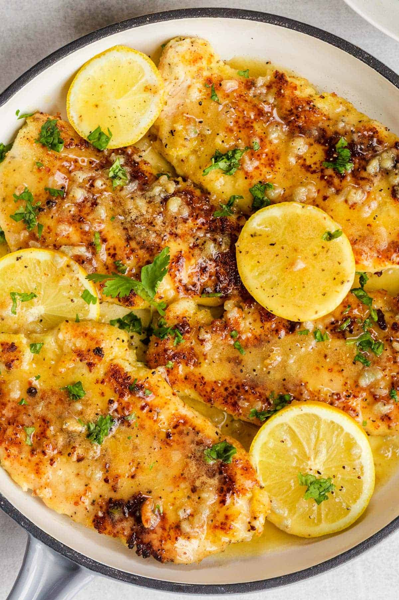

Simple Lemon Chicken Recipe

Description
This parmesan-crusted Lemon Chicken Recipe is so EASY to make and completely ready in 30 minutes! The quick garlic and lemon butter sauce enhances the flavor of the chicken and adds so much flavor to the dish!
Ingredient List
- 1 1/2 lb chicken breast, (2 large), patted dry with paper towels
- 1 tbsp olive oil, to sautee
- 1 tbsp parsley, to garnish (optional)
- 1/2 lemon, sliced for garnish (optional)
Steps
- Gather Ingredients
- Cut Chicken in half lengthwise and beat with a meat mallet to an even thickness.
- Prepare Egg Mixture - whisk together eggs, garlic, Italian seasoning, salt, and pepper.
- Prepare Parmesan Mixture - in a separate bowl, mix together the parmesan cheese and flour.
- Dredge the Chicken - coat in the egg mixture, then generously coat in parmesan mixture, shaking off excess. Remove from the heat and fluff with a fork. Transfer to a plate and serve garnished with butter and parsley, if desired.
- Cook Chicken. Add oil to a hot skillet then add breaded chicken and cook 4-5 minutes per side, until golden brown and the internal temperature reads 165˚F with an Instant Read Thermometer.